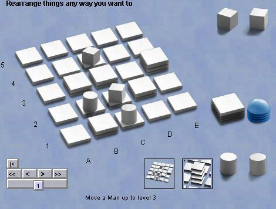

Santorini
Santorini is an abstract whose miniimalist components give it a
striking and unique appearance. Starting with a 5x5 grid of
squares, players manouver two men each and stack more squares, in an
effort to ascend to a height of 3 above the base. The base game
becomes a little less abstract with the addition of gods and heroes,
who alter the rules in the rules of the base game.
The official rules are here, but
briefly, you first place your men, then each turn you move a
man, and build a new square adjacent to the man you moved. You
can descend freely, but can only ascend one level at a time.
Adding to a third level above the base becomes a dome. A man
ascending to the third level wins. If neither of your men can
move, you lose.
Robots: look pretty
fierce to me, but lets see what the experts think.
|

|